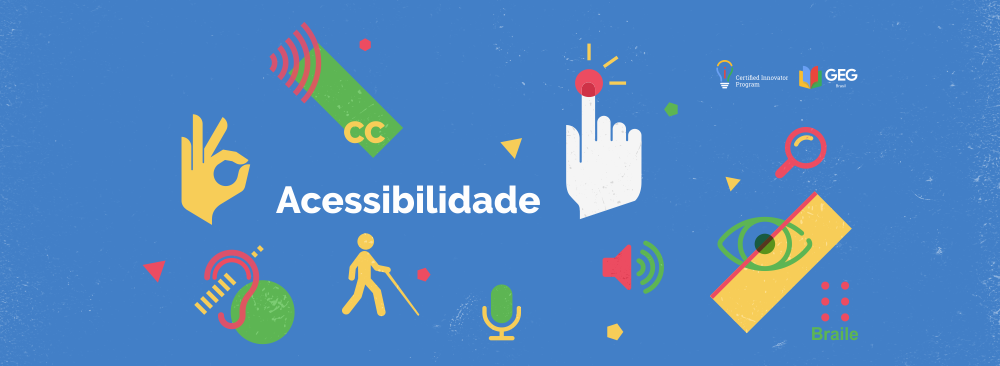

/i.s3.glbimg.com/v1/AUTH_59edd422c0c84a879bd37670ae4f538a/internal_photos/bs/2021/C/n/tvnHSJQFumY6kW9s3nkA/thumbnail-af-on-jurupis-evento-adote-28ago-post.jpg)
Adote ou apadrinhe um dos nossos pets!
Você pode colaborar de mais de uma forma!
Além de adotar ou apadrinhar os animais, você pode realizar doações esporádicas via PIX (11-94497-1953)
Ou ainda doar suas notas fiscais pra Instituição

220
Se você procura um cachorro manso, mas que está sempre atento pra te proteger, o 220V é perfeito
Tenho Interesse
Gorda
Cadela dócio e brincalhona, ideal para quem deseja um pet para crianças, a gorda vai divertir a familia toda
Tenho Interesse
220
Se você procura um cachorro manso, mas que está sempre atento pra te proteger, o 220V é perfeito
Tenho Interesse
220
Se você procura um cachorro manso, mas que está sempre atento pra te proteger, o 220V é perfeito
Tenho InteresseColabore apadrinhando um de nossos caẽs
Muitos apaixonados por cães querem fazer algo e não sabem como ajudar, às vezes já possuem muitos cães em casa, não tem mais espaço, ou não podem adotar cães, pois o restante da família não está de acordo.
Se você se identificou, saiba que pode apadrinhar cães e ser madrinhas e padrinhos de cães em nosso abrigo.
O apadrinhamento é fundamental porque infelizmente, alguns cães raramente são adotados.
Nosso abrigo deveria ser um lar temporário para cães que sofreram até que encontrem um lar amoroso, infelizmente muitos cães nunca são adotados, seja por ter alguma doença, deficiencia ou ser mais velho, já que as pessoas tem grande preferência por filhotes. Existe ainda o preconceito com algumas raças ou pela falta de uma.
O apadrinhamento nos ajuda a dar uma vida mais digna para esses cães e até a sensibilizar as pessoas para enxergar o quanto cães nas condições citadas acima também são animais adoráveis e maravilhosos.
Se você deseja apadrinhar um dos nossos cães, por favor nos contate através de qualquer um dos nossos canais clicando aqui
Ainda não se convenceu? Conheça dois motivos para apadrinhar
- Quer ajudar, mas não pode adotar
- Ajuda a fechar as contas
O apadrinhamento pet é uma bela opção para quem ainda não pode ter um pet em casa ou não consegue aumentar a família no momento, mas morre de vontade de ajudar ONGs que atuam na área de proteção animal.
Com um pequeno valor mensal, você pode ser a dinda ou o dindo de um peludinho que ainda não encontrou uma família. Além disso você pode visitar, para poder ver e brincar com o bichinho quando quiser.
Se você tem ou já teve um pet sabe que há custos com alimentação, higiene, medicação e também com procedimentos veterinários. Agora imagine nosso abrigo que cuida de diversos Pets e precisa multiplicar esses custos mensalmente, sendo que não temos receita fixa ou ajuda do gover, mantemos a atividade com recursos próprios e com ajuda de pessoas como você, que sentem-se tocadas pela causa animal. Difícil, né?
Por isso que cada apadrinhamento significa uma receita muito importante para suprir os custos fixos que possuimos todos os meses e ajuda a dar conta dos imprevistos que podem acontecer: como a compra de antipulgas ou algum medicamento de emergência.
Sabendo melhor qual valor conseguiremos contar todo mês, ficamos menos dependentes de doações esporádicas e podemos nos planejar e cuidar ainda melhor dos bichinhos. Mais pets felizes e saudáveis
Nosso objetivo é tornar pets mais felizes e saudáveis, e se você compartilha isso com a gente, apadrinhe um pet.
Com esse gesto de amor e solidariedade você fortalece o trabalho de quem cuida dos animais desamparados e contribui para que mais pets abandonados possam ser acolhidos até encontrarem alguém disposto a cuidar deles com todo amor e carinho que eles merecem.
Conheça nosso trabalho
A UPPA atua desde 2012 na causa animal, adotando animais no municipio
Somos uma equipe de resgate de cães de rua. Nosso canil tem sede própria em Francisco Morato, no bairro Vassouras 2. Trata-se de trabalho voluntario na causa animal. Vivemos de doações e apoio. Se quiser ajudar pode apadrinhar animais resgatados enviando remédios, ração etc ou fazendo uma doação pra que possamos manter a Upaa funcionando.Nesse reportagem abaixo, você pode conhecer um pouco mais do nosso trabalho e da sua relevancia para o municipio.
Recursos de Acessibilidade
As páginas desse site foram projetadas para serem acessíveis e facilmente utilizáveis. As dicas e instruções a seguir podem facilitar a sua navegação.
Teclas de Atalho
Utilize as teclas de atalho para ir diretamente a alguns pontos do Portal. Os atalhos são acionados pela combinação de duas ou mais teclas. As teclas de atalho dependem do sistema operacional (Microsoft Windows, Mac OS, Linux, DOS etc.) e do navegador (Internet Explorer, Google Chrome, Mozilla Firefox, Safari etc.) que você usa. Procure manter-se atualizado quanto à configuração do seu computador, caso as recomendações feitas nesta página não funcionem.
As configurações mais comuns são:
- a tecla ALT para os navegadores Internet Explorer, Google Chrome e Safari em um computador Microsoft Windows.
- a tecla COMMAND simultaneamente, para o navegador Mozilla Firefox em um computador Microsoft Windows ou Linux
- a tecla SHIFT e ALT para o sistema operacional Mac OS
Mantendo essas teclas pressionadas, digite também um dos seguintes números para ir direto ao ponto (não utilize o teclado numérico, geralmente à direita do seu teclado):
- tecla 1 Página inicial do Portal
- tecla 2 Conteúdo principal da página corrente
- tecla 3 Mapa das principais sessões do Portal
- tecla 4 Campo de busca geral do Portal
- tecla 6 Navegação da sessão corrente do Portal, se houver
Tamanho do texto
Na parte superior central de cada página do Portal, há dois ícones que, ao serem acionados, permitem mostrar o texto em tamanho aumentado (ícone "+A") ou retornar ao tamanho original (ícone "A").
Entretanto, nos navegadores mais modernos, geralmente existe uma ferramenta de zoom (ampliação ou redução), que é um método mais eficaz, rápido e agradável de obter textos e imagens no tamanho desejado.
Para usar o zoom no Microsoft Windows ou no Linux:
- pressione a tecla CTRL e digite a tecla + (mais) para aumentar
- pressione a tecla CTRL e digite a tecla - (menos) para diminuir
- pressione a tecla CTRL e digite a tecla 0 (zero) para restaurar o tamanho original da página
Para usar o zoom no Mac OS:
- pressione a tecla COMMAND e digite a tecla + (mais) para aumentar
- pressione a tecla COMMAND e digite a tecla - (menos) para diminuir
- pressione a tecla COMMAND e digite a tecla 0 (zero) para restaurar o tamanho original da página
Ferramentas úteis nos navegadores
Alguns navegadores oferecem ferramentas acessórias (chamadas de extensões ou complementos) para potencializar seu uso. Muitas delas visam a aprimorar a acessibilidade. Aqui vai uma lista de ferramentas que podem ser obtidas para melhorar a sua experiência, com detalhes de onde obtê-las e como instalá-las. As instruções para configuração de algumas dessas ferramentas estão em inglês.
Usando o Google Chrome:
- Para efeito de aumento e diminuição do texto , entre na página da ferramenta Zoom e clique nos botões "GRATUITO" e, em seguida, "Adicionar". O ícone da ferramenta Zoom aparecerá na barra de ferramentas do navegador. Para fazer a configuração desejada, clique no ícone do menu do Google Chrome, localizado no canto superior direito da tela, entre em Ferramentas, Extensões, Zoom e Opções.
- Para efeito de alto contraste , entre na página da ferramenta High Contrast e clique nos botões "GRATUITO" e, em seguida, "Adicionar". O ícone da ferramenta High Contrast aparecerá na barra de ferramentas do navegador. Clique nesse ícone para fazer a configuração desejada.
- Para transformar em áudio um texto selecionado , entre na página da ferramenta Leitor Selecção (Texto-para-voz) e clique nos botões "Usar no Chrome" e, em seguida, "Adicionar extensão". O ícone da ferramenta (um alto-falante) aparecerá na barra de ferramentas do navegador, e uma janela de configurações irá se abrir para que você faça os ajustes desejados.
- Para escrever e editar textos por reconhecimento de voz , entre na página da ferramenta Dictanote e clique nos botões "USAR NO CHROME" e, em seguida, "Adicionar". O ícone da ferramenta Dictanote aparecerá na página de Aplicativos (Apps) do Google. Para fazer a configuração desejada, clique no ícone do Dictanote, entre no aplicativo, clique no ícone Settings, selecione Language Settings e Português do Brasil. Para que o aplicativo funcione, é necessário que seu computador tenha um microfone embutido ou que você o conecte a um microfone. Para ditar, é só clicar no ícone do microfone do Dictanote. O texto irá aparecendo à medida em que você for falando.
Você pode falar conosco por diversos canais de contato
- Via telefone / Whatsapp
- Através do e-mail
- Através de nossas redes sociais
- Através do formulario de contato
Através do número (11) 999999-9999
Você pode nos contatar através do e-mail equipeupaa.f.morato@globomail.com
Acesse nossas redes sociais clicando no icone correspondente abaixo: